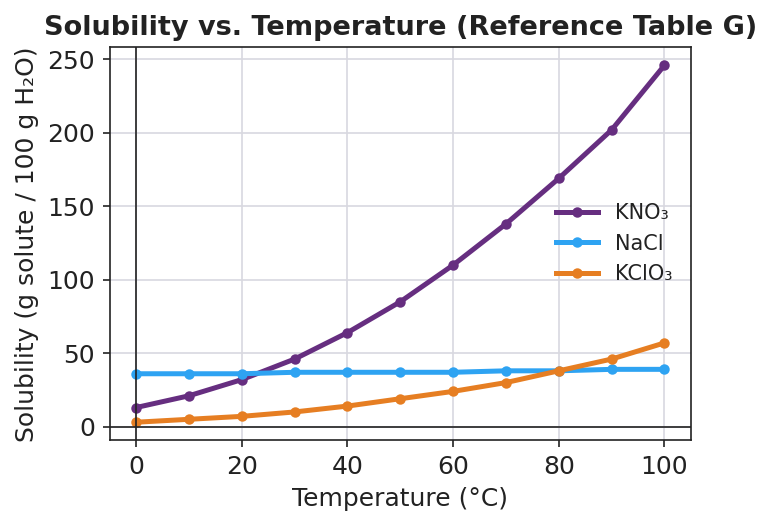

01 Phenomenon
Two beakers of clear, colorless liquid sit on the desk — both look exactly like plain water. One is potassium iodide solution, KI(aq). One is lead(II) nitrate solution, Pb(NO₃)₂(aq). Your teacher pours one into the other and, instantly, a bright yellow solid appears and rains down through the liquid. Nothing was heated. Then your teacher mixes KI(aq) with sodium nitrate, NaNO₃(aq) — and nothing happens. It stays clear. Same kind of action, completely different result.
02 Driving question
Why do solids form when only certain ionic solutions are mixed?
03 Notice & wonder
| I notice… | I wonder… |
|---|---|
Turn & Talk #1: The first pour made a solid and the second pour did not, even though both started with clear liquids. In one sentence, what do you think is different about the two combinations of ions that decides whether a solid forms?
04 Initial model
Before your teacher names any rule: draw a “before” and an “after” picture of the Pb(NO₃)₂ + KI mixture.
- Before (the instant the two solutions meet): show the four kinds of free ions floating separately — Pb²⁺, NO₃⁻, K⁺, I⁻.
- After: show the yellow solid. Which two ions ended up locked in the solid? Which two stayed floating?
Before: (draw here)
After: (draw here)
Which two ions formed the solid? _______________________________________________
Which two ions stayed dissolved? _______________________________________________
Did any new atom appear that was not in one of the two beakers before mixing? _______________
05 Investigate
Part 1 — ABCs: Run the Javalab pairings (observe first, no rules yet)
Open the Javalab “Precipitation reaction” simulation. Mix each pair of solutions below and record only what you see — cloudy solid or stays clear. Do not predict yet; collect the data first.
| Mix these two solutions | Solid forms? (cloudy / clear) |
|---|---|
| NaCl + KNO₃ | |
| Pb(NO₃)₂ + KI | |
| Na₂CO₃ + CaCl₂ | |
| KNO₃ + NaNO₃ | |
| AgNO₃ + NaCl | |
| KI + NaNO₃ |
Look at the pairings that made a solid. What ion appears in those that does NOT appear in the ones that stayed clear?
Part 2 — Read the solubility rules, then predict
Use the solubility-guidelines table (NYS Reference Tables). Today’s rules:
- Compounds of Group 1 metals (Li⁺, Na⁺, K⁺, …) and ammonium (NH₄⁺) are soluble.
- Nitrates (NO₃⁻) are soluble.
- Chlorides (Cl⁻) are soluble except with Ag⁺, Pb²⁺, Hg₂²⁺.
- Iodides (I⁻) are soluble except with Ag⁺, Pb²⁺, Hg₂²⁺.
- Carbonates (CO₃²⁻) are insoluble except with Group 1 and NH₄⁺.
The method (use it every time): (1) identify the four ions, (2) swap partners to get two possible new compounds, (3) check each on the table, (4) if one is insoluble, that is the precipitate; if both are soluble, no precipitate.
Complete the table for three of the Javalab mixes:
| Mix | Two new pairings (swap partners) | Which is insoluble? (precipitate) | Matched Javalab? |
|---|---|---|---|
| Pb(NO₃)₂ + KI | _________ and _________ | ||
| Na₂CO₃ + CaCl₂ | _________ and _________ | ||
| AgNO₃ + NaCl | _________ and _________ |
Part 3 — Reading the solubility curve (Table G)
Look at figures/solubility_curves.png:

At 60 °C, about how many grams of KNO₃ dissolve in 100 g of water? _______________
At 60 °C, about how many grams of NaCl dissolve in 100 g of water? _______________
Both KNO₃ and NaCl are soluble. Use the curves to explain, in one sentence, why “soluble” does not mean they dissolve the same amount.
06 Make it make sense
For each mixture, swap partners, check the solubility rules, and decide whether a precipitate forms. If one forms, name it. These are the same mixes you ran in the Investigation — confirm your reasoning here.
1. Pb(NO₃)₂(aq) + KI(aq)
- Four ions present: _______________________________________________
- Two new pairings (swap partners): _______________________________________________
- Soluble or insoluble for each? _______________________________________________
- Precipitate (if any): _______________________________________________
2. Na₂CO₃(aq) + CaCl₂(aq)
- Four ions present: _______________________________________________
- Two new pairings (swap partners): _______________________________________________
- Soluble or insoluble for each? _______________________________________________
- Precipitate (if any): _______________________________________________
3. NaCl(aq) + KNO₃(aq)
- Four ions present: _______________________________________________
- Two new pairings (swap partners): _______________________________________________
- Soluble or insoluble for each? _______________________________________________
- Precipitate (if any): _______________________________________________
07 Key vocabulary
- soluble
- describes a compound that dissolves in water, separating into free ions; the solubility-guidelines table lists which ion combinations are soluble (e.g., all Group 1 metal and nitrate compounds)
- insoluble
- describes a compound that does not dissolve in water and instead remains (or forms) as a solid; when two solutions are mixed, an insoluble product is the precipitate
- precipitate
- an insoluble solid that forms and separates from solution when two aqueous solutions are mixed, produced when a new cation–anion pairing cannot stay dissolved (e.g., PbI₂, AgCl, CaCO₃)
Use each term in a sentence about today’s investigation. Do not copy the definition — describe something you actually observed or did.
soluble: _______________________________________________ _______________________________________________
insoluble: _______________________________________________ _______________________________________________
precipitate: _______________________________________________ _______________________________________________
08 Revise your model
Return to your Initial Model (the before/after particle sketch). Add vocabulary labels:
Label the two ions that formed the solid as the precipitate, and label that compound as insoluble.
Label the two ions that stayed dissolved as spectator ions (they start and end dissolved).
Write a revised appositive sentence for the solid you saw:
Lead(II) iodide — _________________________________________ — forms when Pb²⁺ and I⁻ ions meet in solution.
Then finish this Because / But / So sentence:
Mixing Pb(NO₃)₂ with KI forms a yellow solid, but mixing KI with NaNO₃ does not, because __________________________________________, but __________________________________________, so __________________________________________.
09 Exit ticket
(a) Using the solubility-guidelines table, classify each compound as soluble or insoluble.
- BaSO₄ (barium sulfate): _______________
- (NH₄)₂CO₃ (ammonium carbonate): _______________
(b) A student mixes silver nitrate solution, AgNO₃(aq), with potassium chloride solution, KCl(aq). Swap partners and check the table. Does a precipitate form? If so, name it.
Two new pairings: _______________________________________________
Precipitate (if any): _______________________________________________
(c) Using the Table G solubility curve, estimate how many grams of KNO₃ dissolve in 100 g of water at 40 °C.
_______________ g per 100 g H₂O
10 Explore further
- Precipitation Reaction — Javalab (`javalab.org`, "Precipitation reaction" simulation): students drag cation and anion solutions together on screen and watch which pairings produce a solid and which stay clear. Because it is a simulation, students can run many combinations quickly and safely — far more than a wet lab allows in 42 minutes. They record each pairing as "precipitate" or "no precipitate" and look for the pattern. No reagents, no waste, no goggles required for the digital portion.
- Optional teacher demonstration (wet): the lead(II) iodide "golden rain" demo — Pb(NO₃)₂(aq) + 2 KI(aq) → PbI₂(s, yellow) + 2 KNO₃(aq). Lead compounds are toxic; this is a *teacher-only* demo behind a barrier, with gloves and goggles, and the waste is collected for hazardous disposal — never a student hands-on. A safer student-run wet alternative is mixing calcium chloride with sodium carbonate to make white CaCO₃(s).
- Particle-model build: students sketch the before/after particle diagram (see `figures/precipitation_particle_model.png`) to explain *where* the solid comes from — the reacting ions, not new atoms.